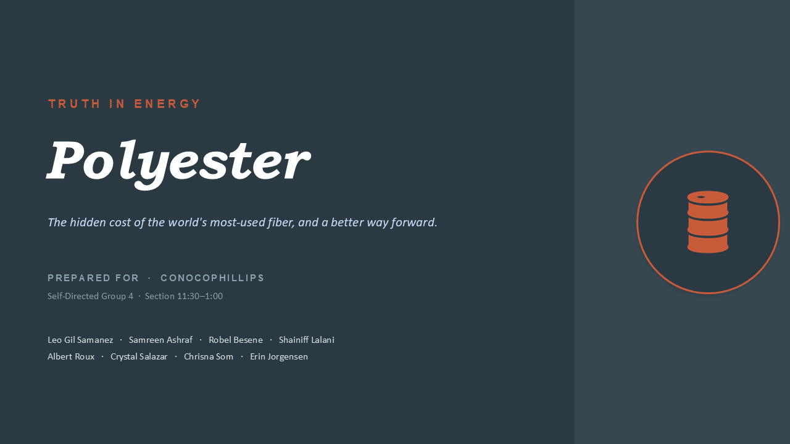
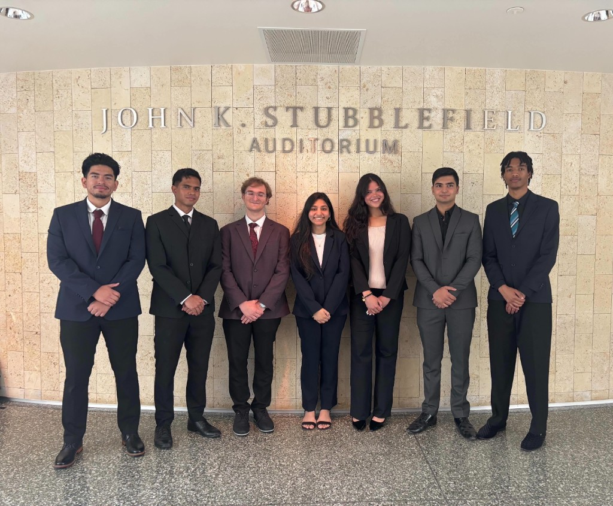

CASE STUDY · CONOCOPHILLIPS · TRUTH IN ENERGY
ConocoPhilips "Truth in Energy"
Participated in ConocoPhilips' "Truth in Energy" initiative, exploring transparency, sustainability, and innovation within the energy industry.
Presentation
Truth in Energy
Scroll or use the arrow controls to move through the presentation.

1 / 1201 / Overview
Researched industry trends and developed insights on how energy companies can communicate more effectively with stakeholders.
Participated in ConocoPhilips' "Truth in Energy" initiative, exploring transparency, sustainability, and innovation within the energy industry.

02 / Key Highlights
Analyzed energy sector data and market trends to identify key transparency challenges
Developed recommendations for improving stakeholder communication
Presented findings as part of a collaborative team project
Developed insights on how energy companies can communicate more effectively with stakeholders.
03 / Documents
Download Presentation